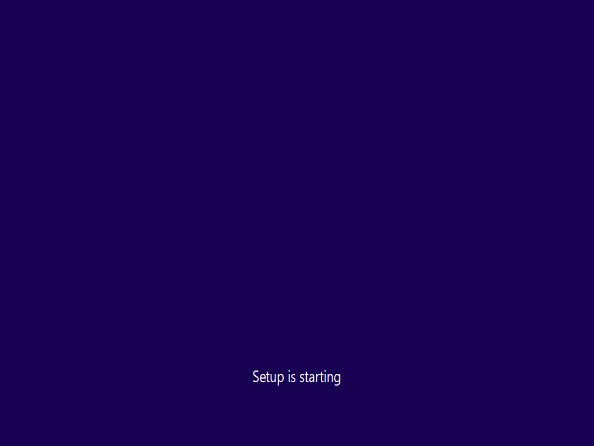
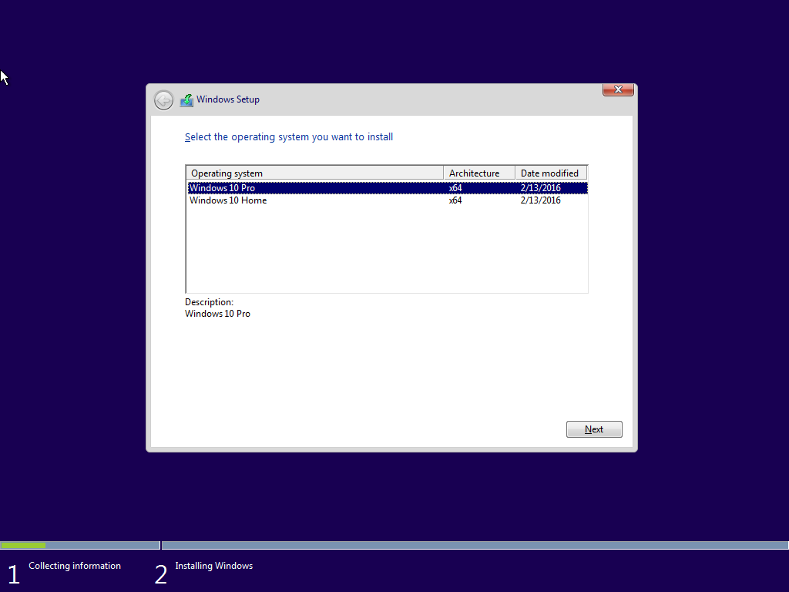
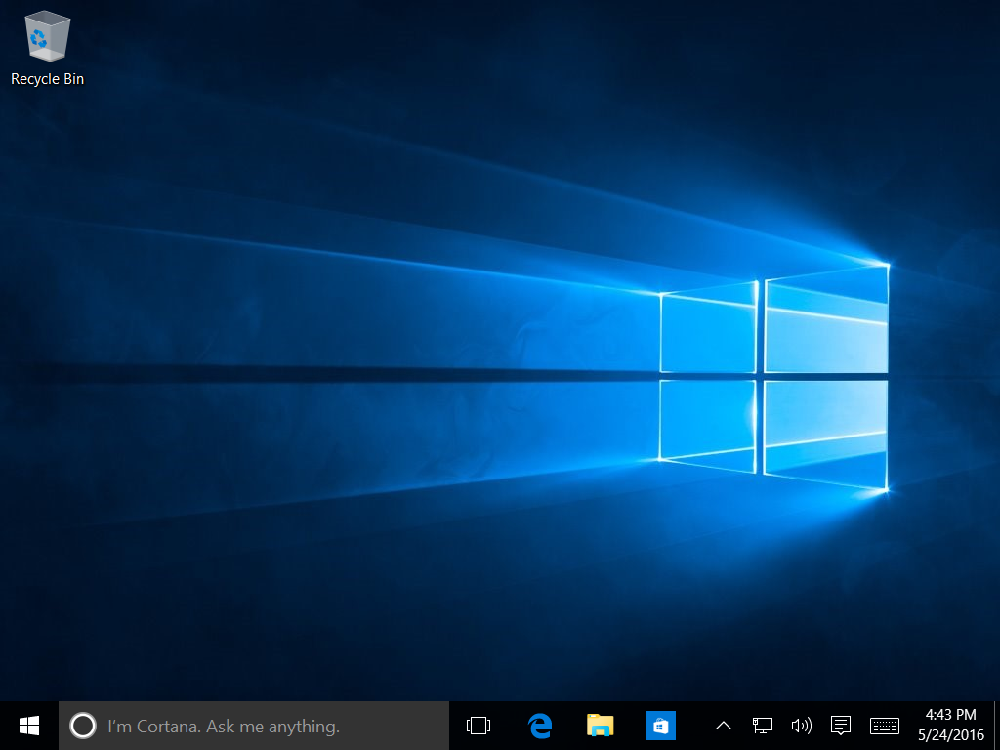
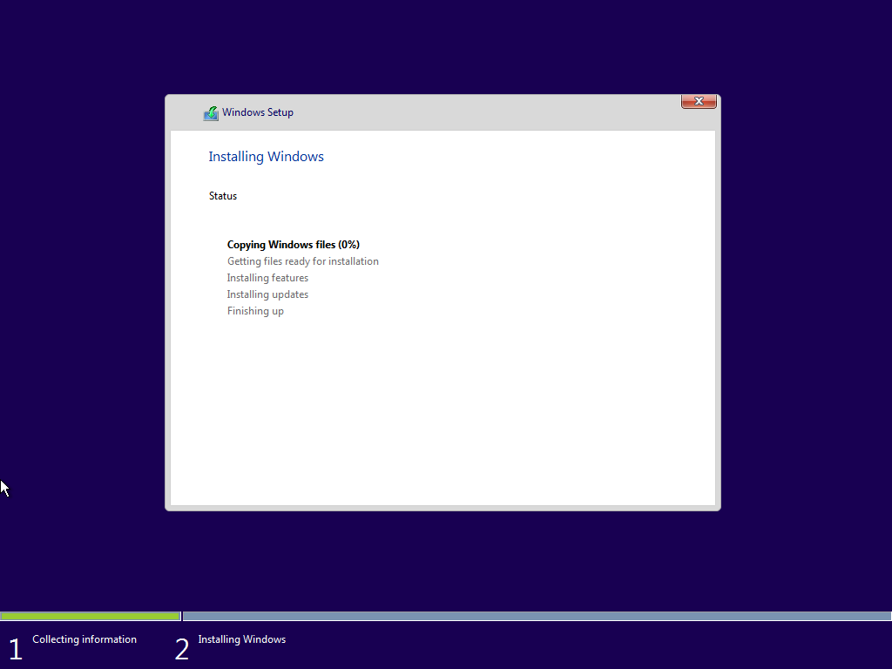
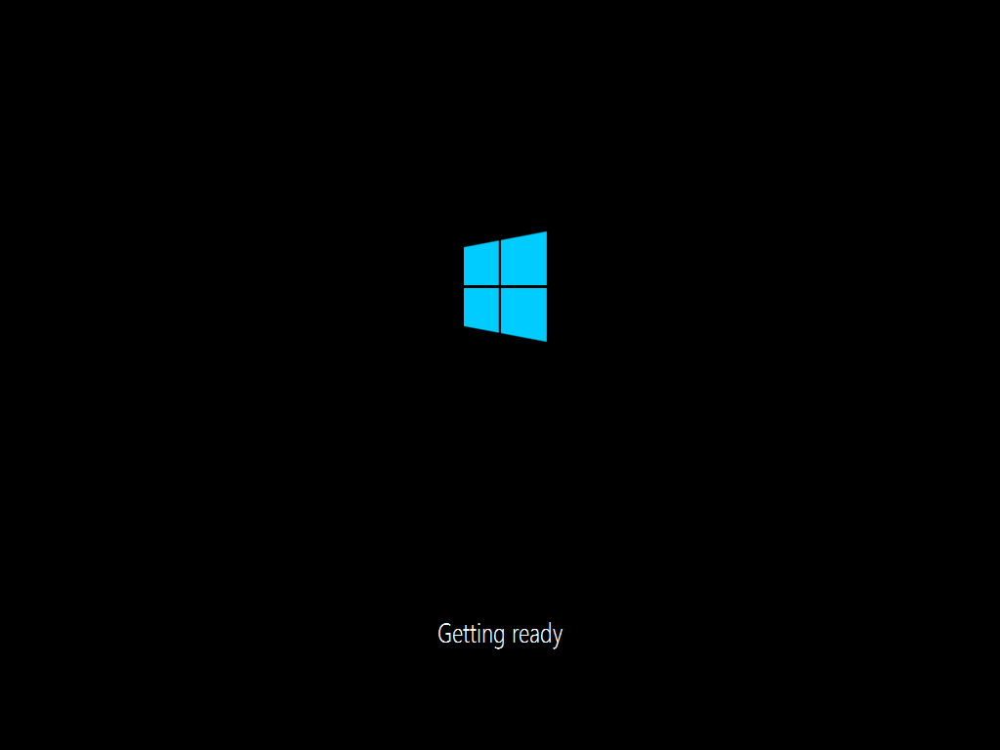
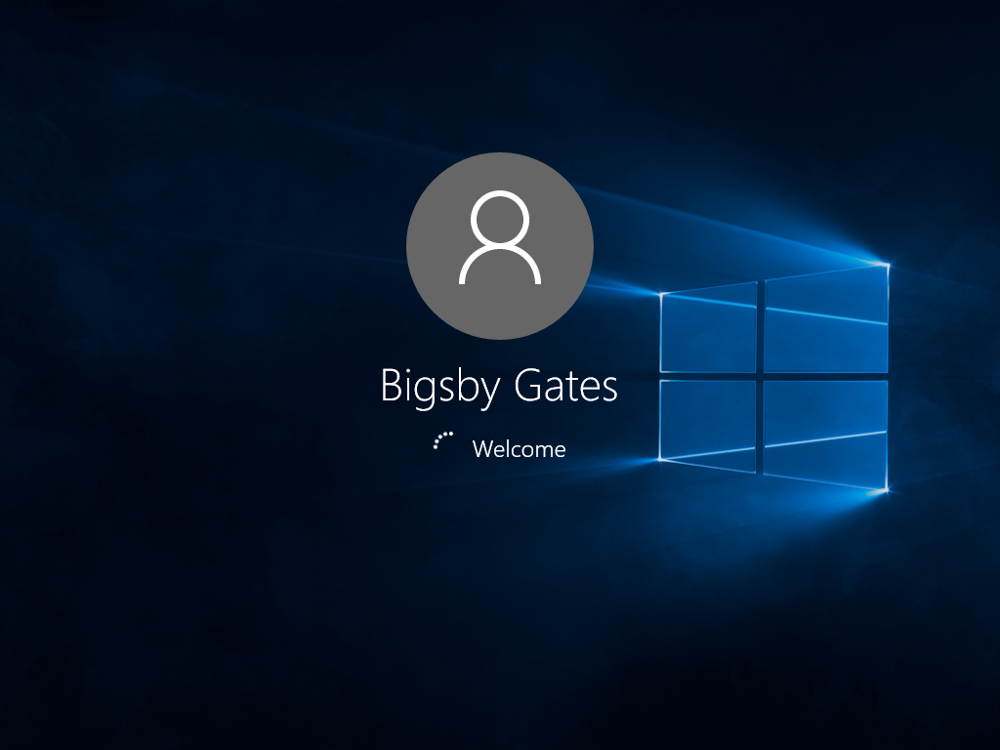
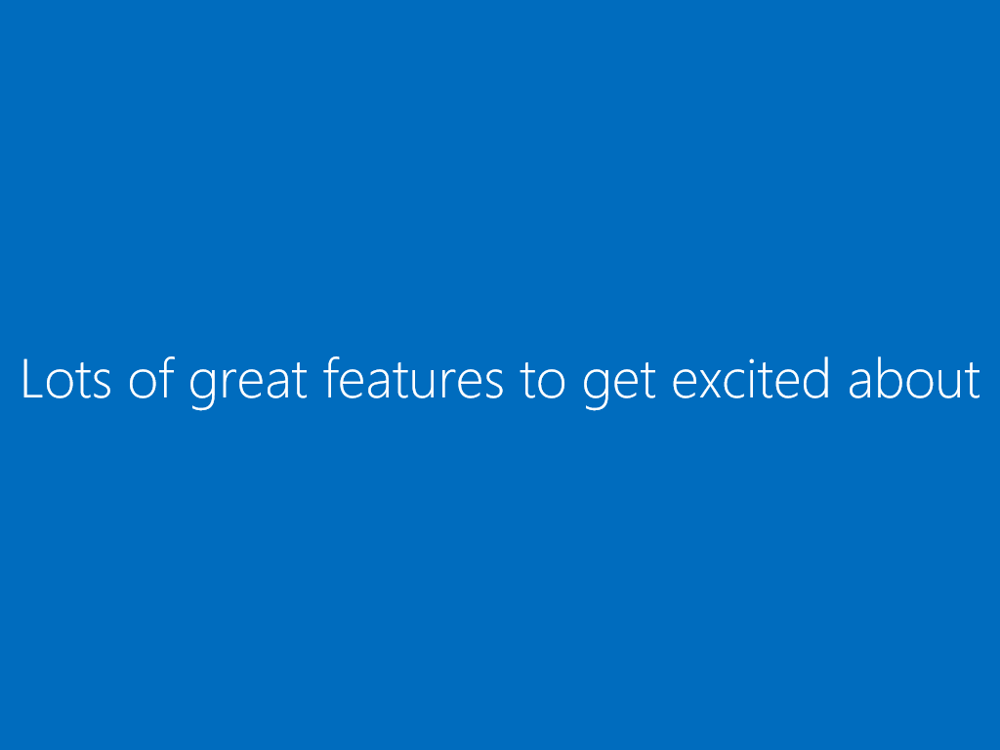
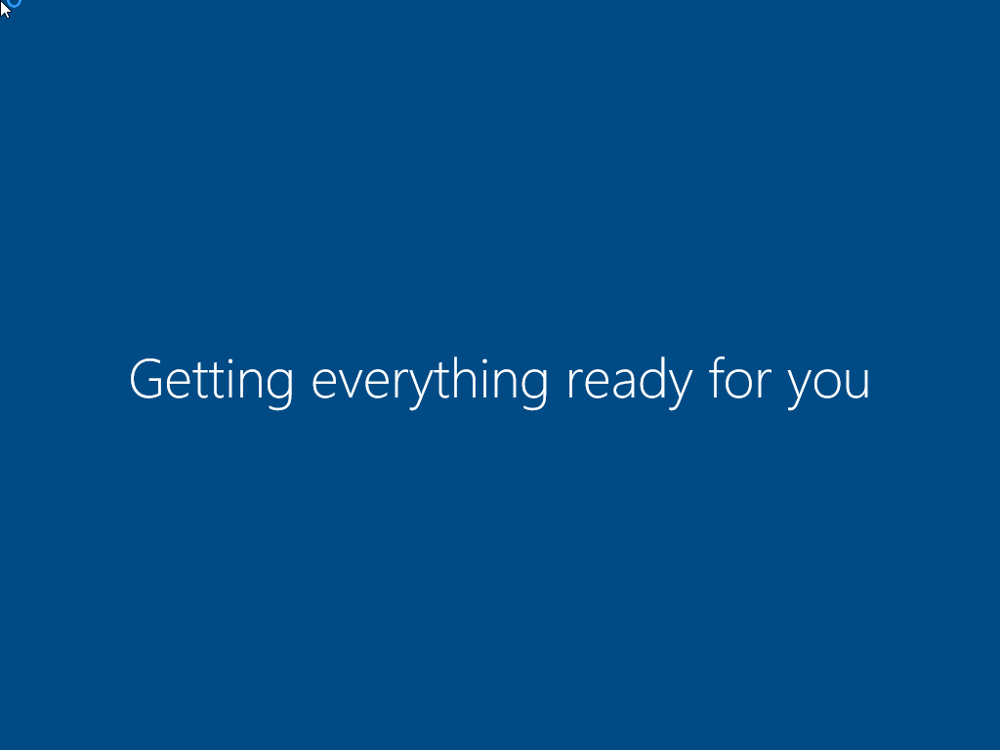
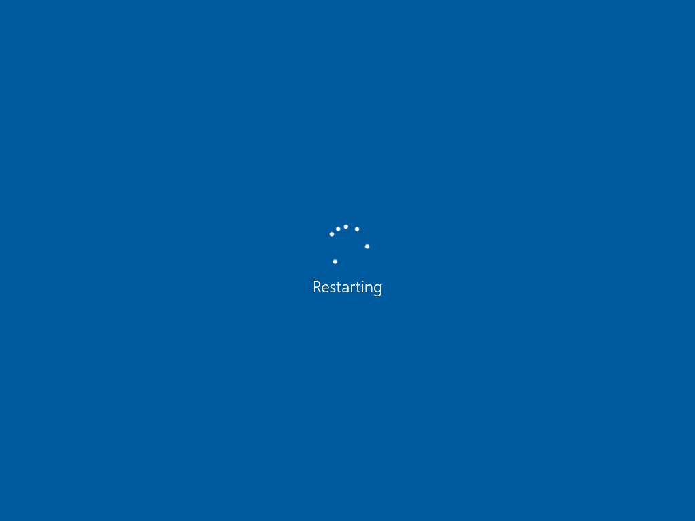
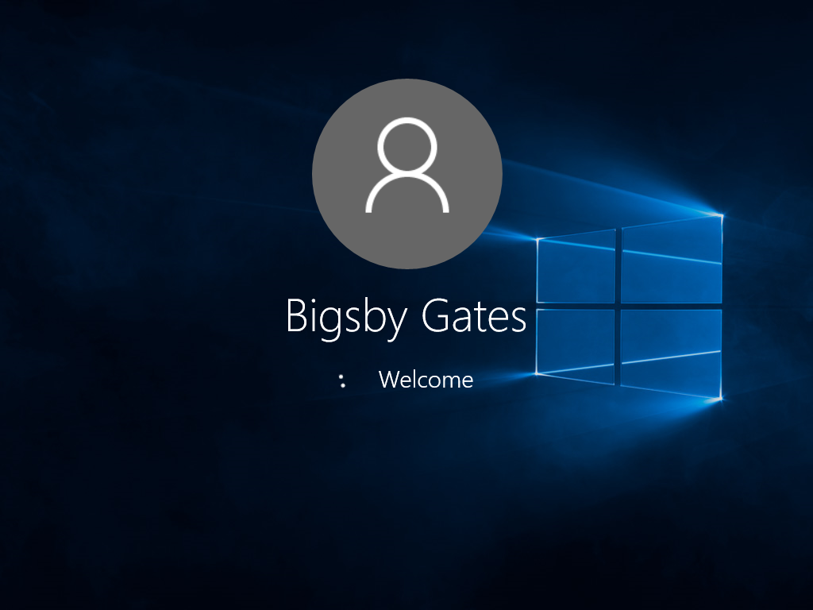

Installing Windows (10)
This install couldn't be simpler...
The steps:
Download ISO
Download using the downlad tool from here. Click "Downlad tool now".
-
Mount ISO on machine
In this series, a Virtual Machine is being used.
Install the Operating System
There are a series of options taken here that are, by no means, mandatory but more of a personal preference.
Installation steps:
- Windows starts on machine boot 
- Select windows version: (any) 
- And we're in! 
Here, the install takes place...
...and more settings up...
...and starting again...
...and a first welcome...
(as VM Ware is being used, it requires a name when it recognizes and Windws ISO. That's where this name comes from.)
...and setting up more stuff...
...and more...
...and restarting...
...and another start...
...and another welcome...
